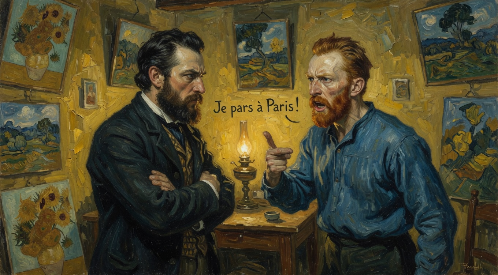

Роковая ссора с Гогеном
23 декабря 1888 года, вечер
Напряжение между Ван Гогом и Гогеном достигло предела: после постоянных споров об искусстве (натура против воображения) Гоген заявил, что больше не может терпеть вспышки Ван Гога и решил уехать в Париж.